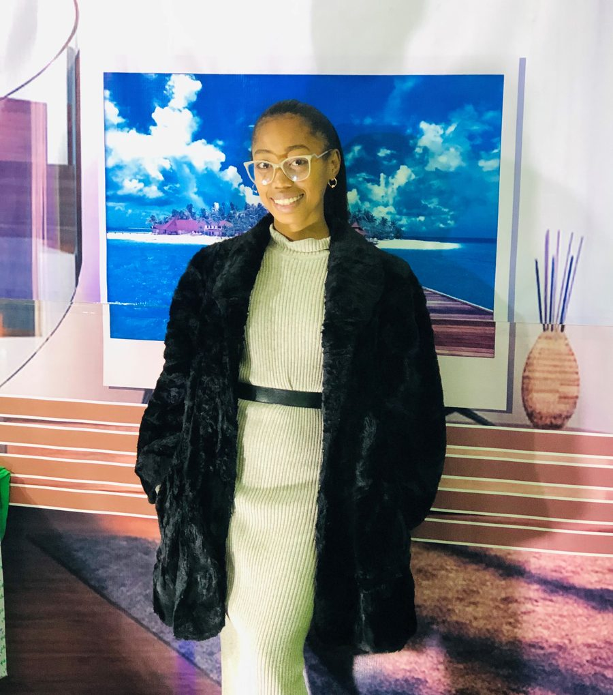
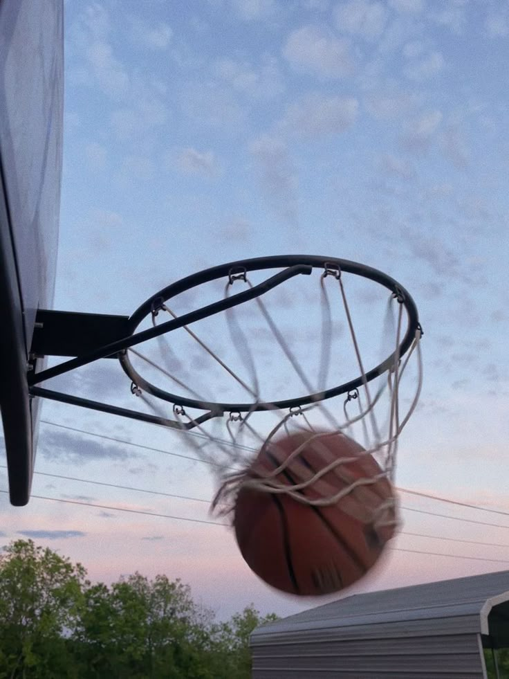
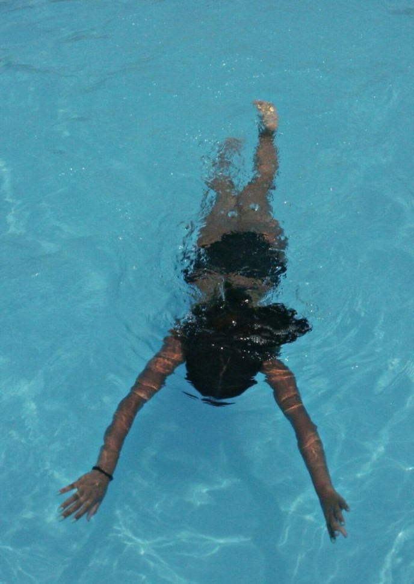

Gestion de projet
Planification, coordination d'équipes, suivi et évaluation de projets.
Portfolio — Fianarantsoa, Madagascar
Relations publiques · Communication Organisationnel . Communication numérique · Management de projet
Diplômée en relations publiques et communication organisationnelle, aujourd'hui en Master I de communication numérique. Je conçois des messages qui se voient, s'entendent et rassemblent — du plateau télé aux réseaux sociaux.

En poste dès maintenantÉtudiante en Master I spécialisée en communication numérique et management de projet, je suis passionnée par les stratégies digitales, la création de contenu et la coordination de projets à impact. Mon parcours universitaire et mes expériences au sein de médias et d'ONG m'ont permis de développer une bonne capacité d'adaptation, un esprit d'équipe et un sens aigu de la communication. Curieuse, créative et rigoureuse, je m'investis dans chaque projet avec enthousiasme.
EMIT Fianarantsoa
Troisième année en relations publiques et multimédia.
EMIT Fianarantsoa
EMIT Fianarantsoa
Lycée Fo Masin'i Jesoa, Ranomafana
EMIT Fianarantsoa
Gestion de projets, stratégie digitale, rédaction web, communication de crise et outils numériques.
ONG Ny Tanintsika, Fianarantsoa
Rédaction de supports, animation des réseaux sociaux, production de contenus et couverture événementielle.
GTV — Gideona Television
Présentation d'émissions, animation de plateaux et production de contenu audiovisuel.
MADVISION Antohanatady
Planification, coordination d'équipes, suivi et évaluation de projets.
Création et gestion de contenus, réseaux sociaux, stratégie de communication.
Animation télévisuelle, relation presse et communication institutionnelle.
Communication interne et externe au service de la cohésion.


Disponible pour des missions en communication, relations publiques et gestion de projet. Écrivez-moi, je réponds vite.